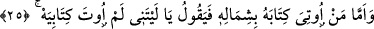
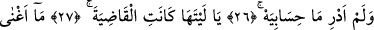
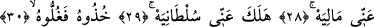
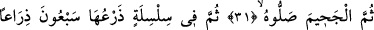
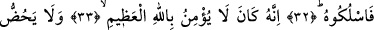
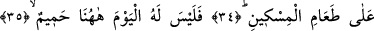
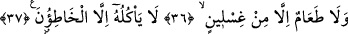

KİTABI SOL TARAFINDAN
VERİLENE GELİNCE
25. Kitabı sol tarafından verilene gelince, o: Keşke, der, bana kitabım
verilmeseydi de,
26. Hesabımın ne olduğunu bilmeseydim!
27. Keşke onunla (ölümümle) her iş olup bitseydi!
28. Malım bana hiç fayda sağlamadı;
29. Saltanatım da benden (koptu), yok olup gitti.
30. Onu yakalayın da, (ellerini boynuna) bağlayın;
31. Sonra alevli ateşe atın onu!
32. Sonra da onu yetmiş arşın uzunluğunda bir zincir içinde oraya sokun!
33. Çünkü o, ulu Allah’a îman etmezdi,
34. Yoksulu doyurmaya teşvik etmezdi.
35. Bu sebeple, bugün burada onun candan bir dostu yoktur.
36. Gıslîn’den (kanlı irinden) başka yiyeceği de yoktur.
37. Onu ancak günahkârlar yer.
Kendisine hakâret olsun diye “Kitabı sol tarafından verilene gelince, o:” Ey mahşer
halkı “Keşke, der” bütün günahlarımı toplayan şu “kitabım bana verilmeseydi.”
Kitabın sol taraftan verilmesinin o kişiye hakâret anlamına gelmesi, sol tarafın uğursuz
kabûl edilmesinden dolayıdır. Öte yandan hakâret olsun diye verilmesi, kişinin sol
elinin arkasına doğru bükülerek kitabının kendisine verilmesinden ve onu bu eliyle
alacak olmasından, ayrıca içerisindeki kendine âid çirkin amellerini görecek
olmasından dolayıdır. Bu kişi mahşer halkına, duymuş olduğu üzüntü, iç yangısı ve
içinde hissettiği korku ile böyle seslenecektir. İşte bu korku, vücûd eleminden daha